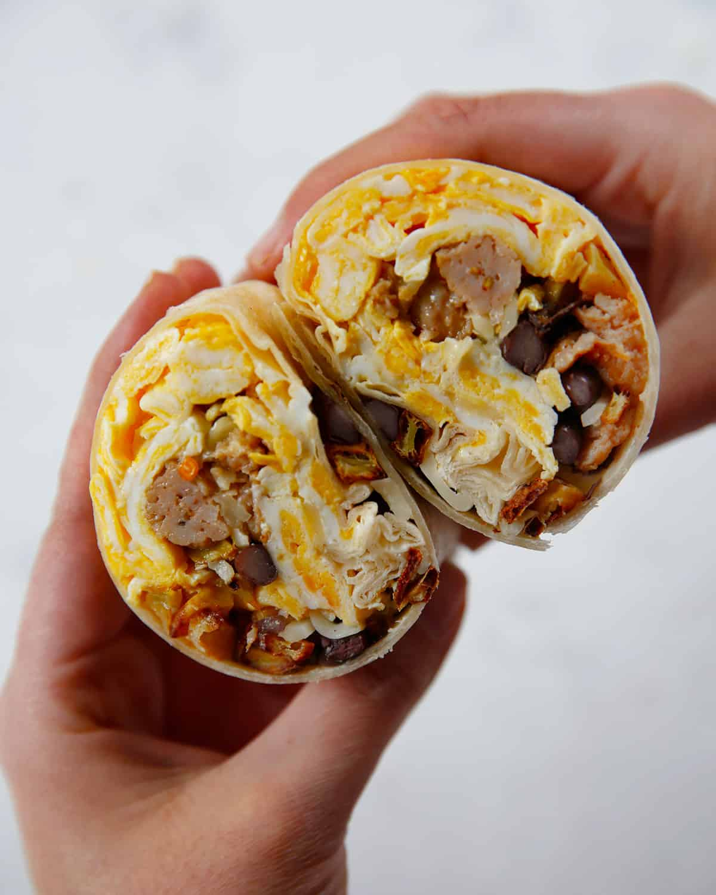

Cowboy Breakfast Burrito

Packed full of protien, vitamin k, and a whole lot of flavor you can't go wrong using my recipe to put some pep in your step.
- grilled chicken - cubed
- 2 eggs
- arugala
- siracha
- spices; salt, pepper, tumeric, curry powder, cayenne pepper, garlic powder
- torlilla wraps
- sour cream
- First lay out your torilla and add 2 Tbs of sour cream, add siracha and curry to taste.
- Next oil your pan and let heat, once sizzling add the two eggs and salt,
pepper, tumeric, cayenee, and curry powder.
- Now cover your eggs and cut up arugala and place it on the torilla on the sour cream mix
you made earlier.
- Once eggs are 3/4 way cooked gently flip them over and let sear for a few seconds before removing
to the torilla wrap.
- The next step is to put the cooked chicken into the pan and add a good amount of siracha and honey.
Mix the chicken in this sauce as it sears, this should take less than a minute. once finished add to wrap.
- The final step is to sear the wrap so it stays closed, to accomplish this hold the burrito veritcal to seal the ends,
and the you can toast the rest horizontally, and viola. You now have make a tasty and healthy breakfast that will keep you
going all day long.